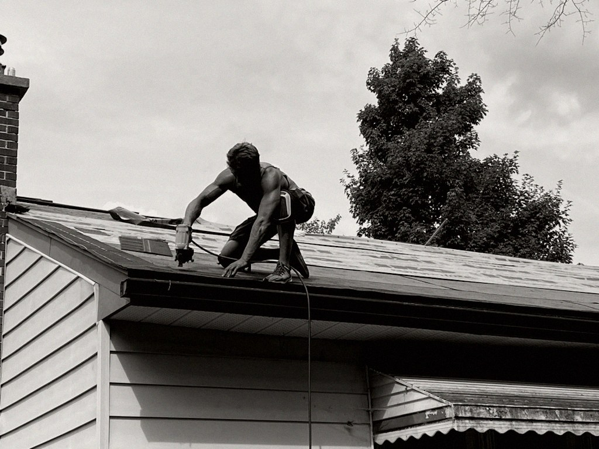

Honest writing on addiction, recovery, and the systems built around them. Written by a working roofer, three years clean, in Ottawa.
Most people writing about addiction policy come from clinical, academic, or advocacy backgrounds. Their analysis is usually good. But it's filtered through institutions.
I work in roofing. Real economy, physical labor, unstable conditions, men working through what most policy papers describe in the third person. On a job site you see what "unsafe" actually looks like — the word means something different there than it does in a memo.
I've also moved through the system this site is about. Detox, treatment, federal time, parole, re-entry. Not as a researcher. As the person on the file.
What I'm trying to do here is hold both — the analysis and the ground — at once.

What the Act authorizes between apprehension and the hearing — the assessment report, the right to refuse, the authority to use force — and why the safeguards are built for a person who isn't there.
Read this piece →A solid roof is shelter. A solid recovery is the same thing — built piece by piece, nail by nail, day by day.— Josh Pearsall, Ottawa
A section-by-section read of Ontario's new involuntary-treatment law. How the system is supposed to work on paper. Where it's likely to break in real life.